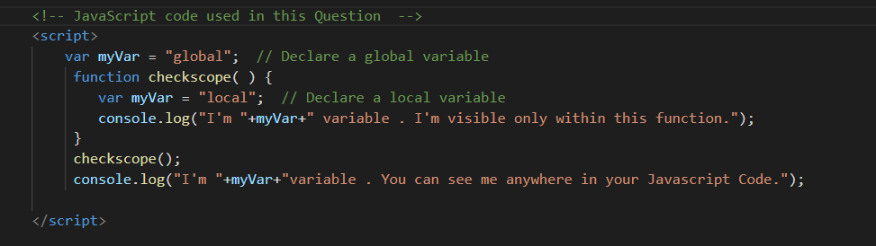
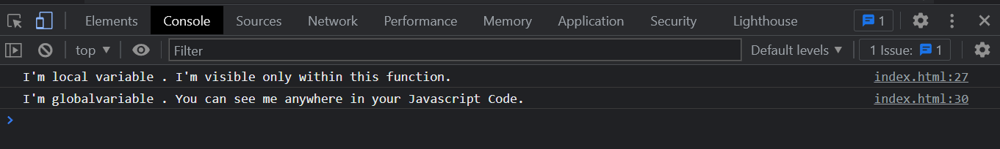

Ques-2: Show the Scope of variables in JS using HTML page.
The scope of a variable is the region of your program in which it is defined. JavaScript variables have only two scopes.
Global Variables − A global variable has global scope which means it can be defined anywhere in your JavaScript code
Local Variables − A local variable will be visible only within a function where it is defined. Function parameters are always local to that function
Within the body of a function, a local variable takes precedence over a global variable with the same name. If you declare a local variable or function parameter with the same name as a global variable, you effectively hide the global variable.
This is the Screenshot of the underlying code in this Question to explain the scope of variables.You can verify it by clicking View Code button
This is the Screenshot of the console output of the code in tihs Question you can verify the same by going to console of this HTML page.
